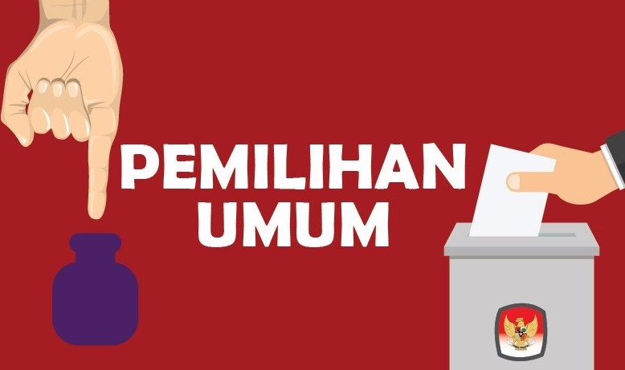
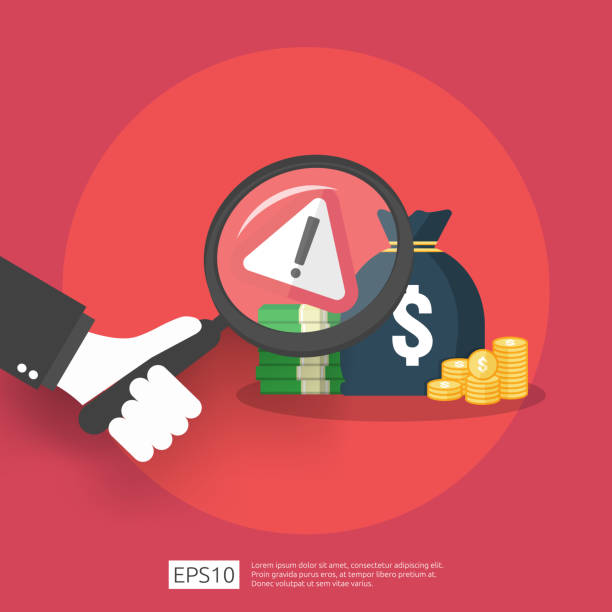

1. Demokrasi Parlementer

Ada banyak hal positif dan negatif isu demokrasi parlementer di masa sekarang ini. Salah satunya adalah pemilihan pemilu. Pemilihan pemilu pertama diselenggarakan pertama di Indonesia pada tahun 1955. Pemilu tahun 1955 merupakan pemilu yang paling demokratis yang pernah dilaksanakan di Indonesia.Pemilihan pemilu tetap dilakukan sampai sekarang ini yang sebentar lagi akan terjadi. Banyak sistem partai yang memiliki banyak partai politik pun ikut aktif dalam pemerintahan. Beberapa dari partai tersebut mewakilkan suara-suara rakyat. Kemudian di sisi lain, banyak juga terjadi persaingan antar partai. Partai politik di masa sekarang ini banyak yang cenderung memperjuangkan kepentingan golongan daripada kepentingan nasional. Terkadang sering peranan penting dalam parlemen melakukan pemilihan yang kurang sehat dan berusaha menjatuhkan partai lain. Hal tersebut menyebabkan stabilitas politik, sosial ekonomi, serta keamanan terganggu.
2. Demokrasi Terpimpin

Era Demokrasi Terpimpin dipenuhi dengan campur tangan antara kepemimpinan PKI dan kaum borjuis nasional dalam menekan pergerakan-pergerakan kaum buruh dan petani Indonesia. Walaupun itu mereka tetap gagal dalam memecahkan masalah-masalah politis dan ekonomi yang mendesak Indonesia kala itu. Pendapatan ekspor di Indonesia menurun dan inflasi pun menaik, korupsi dan militer menjadi wabah sehingga situasi politik Indonesia menjadi tidak seimbang dan memicu banyaknya demonstrasi di seluruh Indonesia, terutama dari kalangan buruh, petani, dan mahasiswa. Isu demokrasi terpimpin pun tidak lagi diterapkan di masa sekarang ini.
3. Demokrasi Pancasila

Selain itu masa orde baru terkenal juga dengan hal lain yaitu praktik korupsi yang merajalela dan nepotisme di mana kepentingan keluarga Soeharto ikut memengaruhi kebijakan negara. Menurut saya hal korupsi ini sudah tidak cukup sedikit kasus yang telah beredar. Tetapi di masa orde baru korupsi sudah banyak dilakukan apalagi oleh orang-orang yang mempunyai kekuasaan tertinggi. Pastinya ada juga banyak isu korupsi di masa sekarang ini. Sikap ini sangat melanggar nilai pancasila untuk kepentingan negara.
4. Demokrasi Reformasi

Isu-isu selama periode ini di antaranya dorongan untuk menerapkan demokrasi dan pemerintahan sipil yang lebih kuat, elemen militer yang mencoba untuk mempertahankan pengaruhnya, Islamisme yang tumbuh dalam politik dan masyarakat umum, serta tuntutan pemerintahan wilayah daerah yang lebih besar. Proses reformasi menghasilkan tingkat kebebasan berbicara yang lebih tinggi, berbeda dengan pembatasan hak asasi manusia yang meluas saat masa Orde Baru. Akibatnya, debat politik menjadi lebih terbuka di media massa dan ekspresi seni makin meningkat.